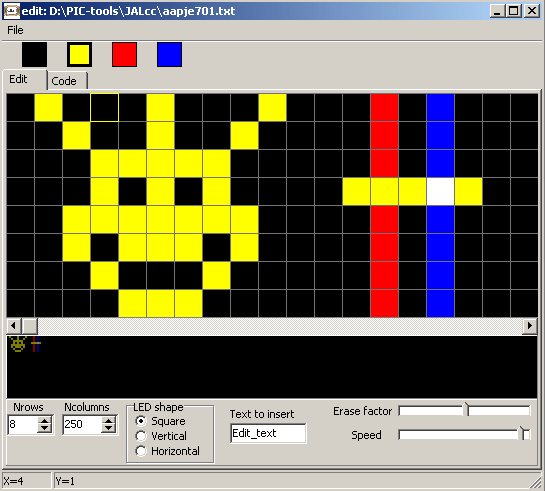
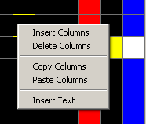
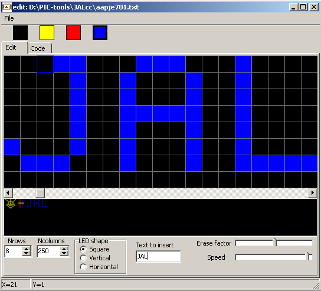
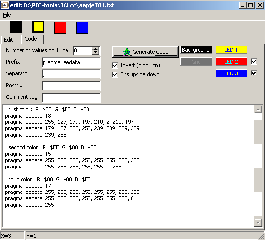

august 2004
Character Generator
Introduction
This tool is meant to create graphics and special characters for LCD devices and or moving LEDs, like the famous Bob Blicks propellor clock.
Todo list
Drawing
First set the number of rows and columns, at the bottom of the edit window.
Select the colors of background and LEDs on the code page.
The shape of the LEDs can be set from the edit page.
Now select a color, from the top of the page (selected color will get a fat border), and start drawing by clicking or dragging with the left mouse button. Erasing is done by selecting the background color from the top of the page or Middle Mouse button. During drawing, Middle Mouse button toggles between erase-tool and last selected LED color.
If more then 1 color is selected in the same box, colors are added. In this way you can simulate multiple LED's near each other.
Because I've chosen yellow (instead of green), yellow+red will stay yellow.
Below the edit window is an animation window where the total image can be viewed. Erase factor and speed (depending on your computers capabilities) can be adjusted.

Inserting, deleting, copying, pasting of (multiple) columns is done through the right mouse button. In these cases the selected column is the left starting point of the action. (Pasting is done as inserting)

Text can be inserted through the built in 5*7 fontset. Type the text in the box at the bottom of the edit page, select the starting column and then select form the right mouse menu "Insert Text".

Code generation
By pressing the button "Generate Code" (on the code page), the code is generated in the memo. The memo can be edited and copied to your application.
For each LED color a complete set is generated (not necessarilly of equal length). The program will try to generate the shortest possible code that's upto the last line containing "all LEDs of one color off".
Each set consists of the length of that section, followed by all the individual values.
Prefix is the text at the beginning of each line, postfix is the text at the end of each line.
The code is generated in normal decimal notation, because hex-notation differs for each compiler.
Code can be inverted and/or upside down (bits swapped).
The example below is for storing the values in data EEprom with JAL.
